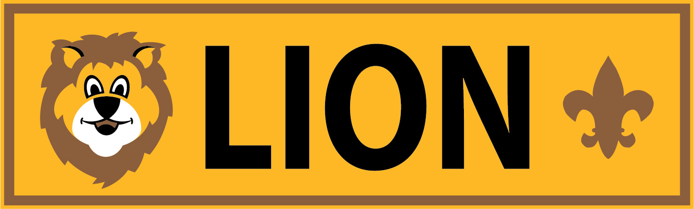
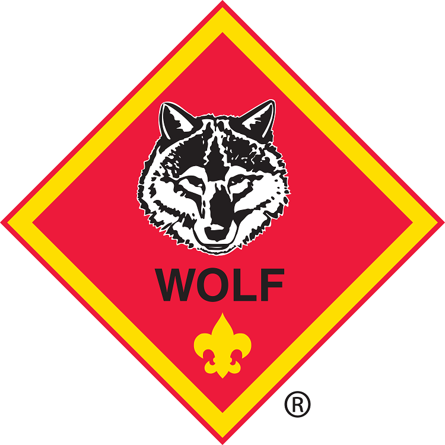
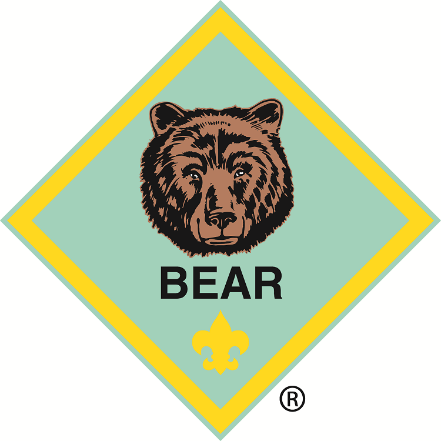
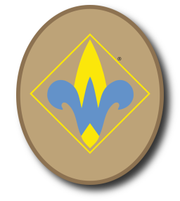
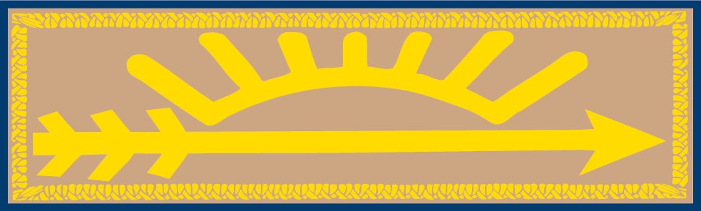

 Lion - Kindergarten
Kindergartners work toward the Lion rank. The Lion rank is earned by completing five adventures as described below. Although participation with an adult partner is required for all Lion awards, recognition items are for the Scouts only.
1. Complete the five required adventures:
- Lion’s Honor
- Animal Kingdom
- Fun on the Run!
- King of the Jungle
- Mountain Lion
2. With your parent or guardian, complete the exercises in the pamphlet entitled How to Protect Your Children From Child Abuse: A Parent’s Guide.
Outside of the requirements, Lion Scouts can also complete any number of seven elective adventures of their den’s or family’s choosing.
Leader:
Jennifer Regna-Gaona - jregnagaona@gmail.com

Tiger - 1st Grade
First graders work toward the Tiger rank. The Tiger rank is earned by completing seven adventures as described below. Although participation with an adult partner is required for all Tiger awards, recognition items are for the Scouts only.
1. Complete each of the six required adventures:
- Games Tigers Play
- My Tiger Jungle
- Team Tiger
- Tiger Bites
- Tiger Circles: Duty to God
- Tigers in the Wild
2. In addition to the six required adventures, complete at least one elective adventure of your den’s or family’s choosing.
3. With your parent or guardian, complete the exercises in the pamphlet entitled How to Protect Your Children From Child Abuse: A Parent’s Guide.
4. Earn the Cyber Chip award for your age. (The Cyber Chip portion of this requirement may be waived by your parent or guardian if you do not have access to the internet.)
Leader:
Andrew Brown - atbrown72@yahoo.com
 Wolf - 2nd Grade
Second graders work toward the Wolf rank. The Wolf rank is earned by completing seven adventures as described below.
1. Complete each of the six required adventures:
- Call of the Wild
- Council Fire (Duty to Country)
- Duty to God Footsteps
- Howling at the Moon
- Paws on the Path
- Running With the Pack
2. In addition to the six required adventures, complete at least one elective adventure of your den’s or family’s choosing.
3. With your parent or guardian, complete the exercises in the pamphlet entitled How to Protect Your Children From Child Abuse: A Parent’s Guide.
4. Earn the Cyber Chip award for your age. (The Cyber Chip portion of this requirement may be waived by your parent or guardian if you do not have access to the internet.)
Leader:
Bob Monahan - bwmonahan@gmail.com
 Bear - 3rd Grade
Third graders work toward the Bear rank. The Bear rank is earned by completing seven adventures as described below.
1. Complete each of the six required adventures:
- Baloo the Builder
- Bear Claws
- Bear Necessities
- Fellowship and Duty to God
- Fur, Feathers, and Ferns
- Paws for Action (Duty to Country)
2. In addition to the six required adventures, complete at least one elective adventure of your den’s or family’s choosing.
3. With your parent or guardian, complete the exercises in the pamphlet entitled How to Protect Your Children From Child Abuse: A Parent’s Guide.
4. Earn the Cyber Chip award for your age. (The Cyber Chip portion of this requirement may be waived by your parent or guardian if you do not have access to the internet.)
Leader/Cubmaster:
Janeen Carter - janeen@tempecubscouts.org
 Webelos - 4th Grade
Fourth graders work toward the Webelos rank. The Webelos rank is earned by completing six adventures as described below. Scouts who are in Cub Scouts in fourth grade must complete the Webelos rank before working towards their Arrow of Light.
1. Be an active member of your Webelos den for three months.
2. Complete each of the five required adventures:
- Cast Iron Chef
- Duty to God and You
- First Responder
- Stronger, Faster, Higher
- Webelos Walkabout
3. In addition to the five required adventures, complete at least one elective adventure of your den’s or family’s choosing.
4. With your parent or guardian, complete the exercises in the pamphlet entitled How to Protect Your Children From Child Abuse: A Parent’s Guide.
5. Earn the Cyber Chip award for your age. (The Cyber Chip portion of this requirement may be waived by your parent or guardian if you do not have access to the internet.)
Leaders:
Tony Furiga - tonyfuriga@gmail.com
Mike Hales - hales5texas@hotmail.com
 Arrow of Light - 5th Grade
Fifth graders work toward the Arrow of Light rank. If a fourth-grade Cub Scout has completed the Webelos rank, they may begin to work on the Arrow of Light. The Arrow of Light rank is earned by completing five adventures as described below.
1. Be an active member of your Webelos den for three months.
2. Complete each of the four required adventures:
- Building a Better World
- Duty to God in Action
- Outdoor Adventurer
- Scouting Adventure
3. In addition to the four required adventures, complete at least one elective adventure of your den’s or family’s choosing.
4. With your parent or guardian, complete the exercises in the pamphlet entitled How to Protect Your Children From Child Abuse: A Parent’s Guide.
5. Earn the Cyber Chip award for your age. (The Cyber Chip portion of this requirement may be waived by your parent or guardian if you do not have access to the internet.)
Leader
Eddie Carr-Gaona - ecgaona@gmail.com